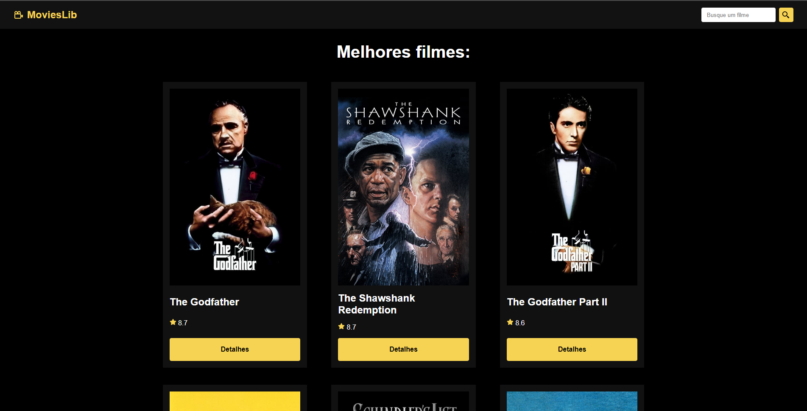
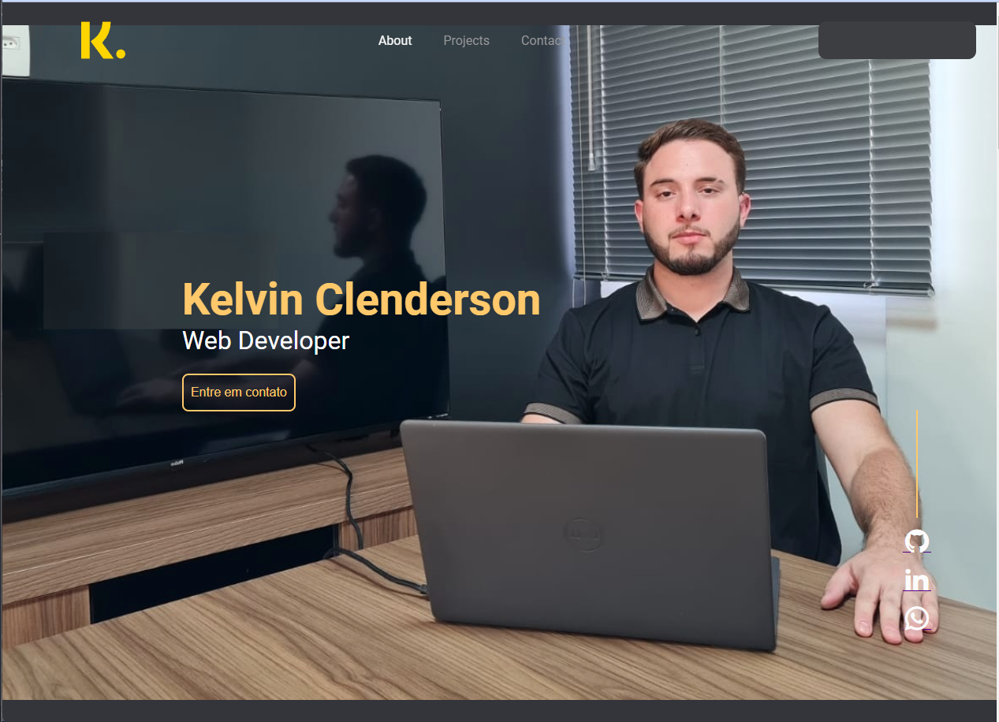
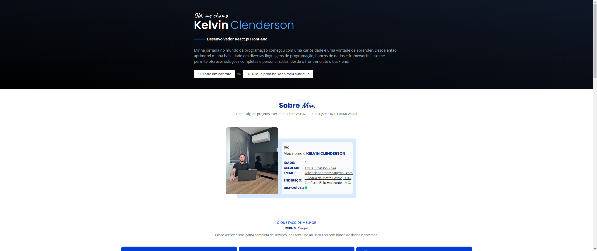
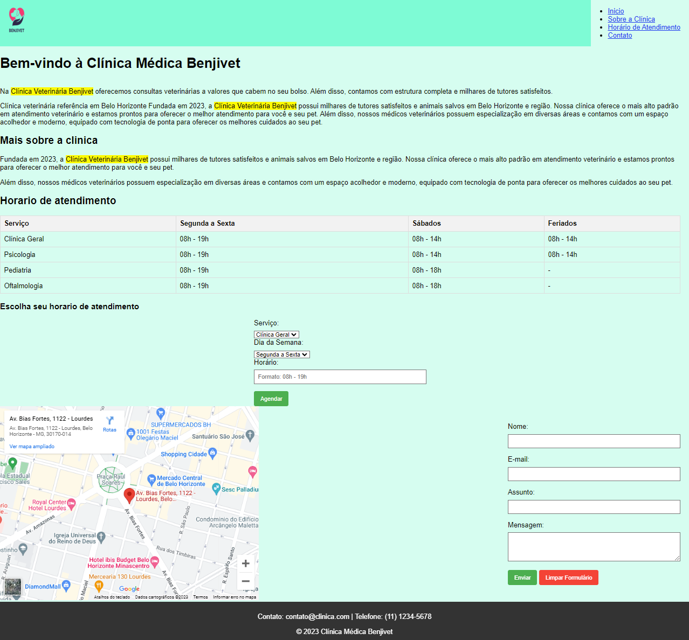

Skills

CSS

HTML
JavaScript
SQLite

ReactJS
Ionic FrameWork
C#

Olá! Meu nome é Kelvin Clenderson, tenho 24 anos e sou
residente em Belo Horizonte/MG. Atualmente, estou dedicando
meu tempo ao ensino superior em Engenharia de Software.
Desde jovem, nutro uma fascinação por computadores, e
minha curiosidade sempre foi um grande impulso na minha
jornada. Ao entrar em contato com a área de Tecnologia,
decidi aprofundar meus conhecimentos em diversas áreas, com
foco no Back-end em C#, Banco de dados SQL, e no Front-end,
explorando ferramentas como CSS, HTML e Java Script. Além
disso, venho aprimorando minhas habilidades em tecnologias
modernas como TypeScript, React e Vite.js.
Estou sempre em busca de novos desafios e
oportunidades para expandir meu conhecimento e contribuir
para projetos inovadores. Vamos conectar e compartilhar
experiências no mundo da tecnologia! ✨🚀





- Aprimoramentos e Correções de Bugs no back-end com
C# .NET para melhorias no back-end.
- Desenvolvimento e Aprimoramento do Front-End:
Utilização de CSS, HTML e JavaScript para aprimorar
a experiência do usuário.
- Integração de API com Postman: Implementação
eficiente do consumo de APIs utilizando Postman.
- Publicação e Testes em Plataformas Móveis:
Experiência em publicação e teste de aplicativos
para as plataformas iOS e Android.
- Aprimoramentos e Solução de Problemas em
Aplicativos Ionic: Especialização em correções e
melhorias específicas para aplicativos desenvolvidos
com Ionic.
Banco de Dados: Somente consultas em Microsoft SQL
Server Server.
- Encarregado do suporte técnico N1 e N2 durante a
implementação do CRM CAPYS; responsável por
identificar, classificar e distribuir erros à equipe
de desenvolvimento CAPYS.
- Encarregado da criação da API do WhatsApp CAPYS em
colaboração com a plataforma Twilio.
- Gestão integral dos projetos relacionados à
implementação do WhatsApp CAPYS.
- Coordenação de treinamentos terceirizados
destinados a clientes e novos colaboradores.
- Condução de apresentações do CRM CAPYS para novos
clientes, em colaboração com a equipe comercial da
INCONTEC.